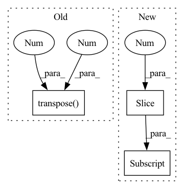

Pattern ID :24021
Before Change
depth = torch.zeros(batch_size, 6, 1, *self.image_size).to(points[0].device)
for b in range(batch_size):
cur_coords = points[b][:, :3].transpose(1 , 0 )
cur_img_aug_matrix = img_aug_matrix[b]
cur_lidar_aug_matrix = lidar_aug_matrix[b]
cur_lidar2image = lidar2image[b]
After Change
lidar2ego_rots = lidar2ego[..., :3, :3]
lidar2ego_trans = lidar2ego[..., :3, 3]
camera2lidar_rots = camera2lidar[..., :3, :3]
camera2lidar_trans = camera2lidar[..., :3, 3]
// print(img.shape, self.image_size, self.feature_size)
batch_size = len(points)In pattern: SUPERPATTERN
Frequency: 7
Non-data size: 3
Instances Fragment ID: 74620146
Project Name: mit-han-lab/bevfusion
Commit Name: f39a4a0752fabc1eb81011b0433af69a6e9ff58c
Time: 2022-09-26
Author: kentang@mit.edu
File Name: mmdet3d/models/vtransforms/base.py
M Class Name: BaseDepthTransform
N Class Name: BaseDepthTransform
M Method Name: forward(12)
N Method Name: forward(11)
M Parent Class: BaseTransform
N Parent Class: BaseTransform
M File Name: mmdet3d/models/vtransforms/base.py
N File Name: mmdet3d/models/vtransforms/base.py
M Start Line: 232
M End Line: 285
N Start Line: 219
N End Line: 284
Before Change
encoder_state: FloatTensor,
attention_mask: BoolTensor
) -> FloatTensor:
encoder_state = encoder_state.transpose(1 , 2 ) .unsqueeze(2)
// print(encoder_state.shape, "encoder_state")
keys = self.k_proj.forward(encoder_state)
values = self.v_proj.forward(encoder_state)After Change
encoder_state: FloatTensor,
attention_mask: BoolTensor
) -> FloatTensor:
shape_split = encoder_state.shape[:2] + (self.head_count, -1)
keys = self.k_proj.forward(encoder_state).reshape(shape_split)
values = self.v_proj.forward(encoder_state).reshape(shape_split)
queries = self.q_proj.forward(encoder_state).reshape(shape_split) Fragment ID: 74620099
Project Name: kuprel/min-dalle
Commit Name: c936d261021f0f38d064e146a2167cf3daeeb0db
Time: 2022-06-27
Author: brkuprel@gmail.com
File Name: min_dalle/models/dalle_bart_encoder_torch.py
M Class Name: EncoderSelfAttentionTorch
N Class Name: EncoderSelfAttentionTorch
M Method Name: forward(3)
N Method Name: forward(3)
M Parent Class: AttentionTorch
N Parent Class: AttentionTorch
M File Name: min_dalle/models/dalle_bart_encoder_torch.py
N File Name: min_dalle/models/dalle_bart_encoder_torch.py
M Start Line: 91
M End Line: 95
N Start Line: 70
N End Line: 74
Before Change
input_img = cv2.resize(input_img, (input_width, input_height))
// Scale input pixel values to 0 to 1
input_img = input_img / 255.0
input_img = input_img.transpose(2 , 0 , 1)
input_tensor = input_img[np.newaxis, :, :, :].astype(np.float32)
return input_tensor
After Change
def prepare_input(image, input_shape, stride, pt):
input_tensor = LetterBox(input_shape, auto=pt, stride=stride)(image=image)
input_tensor = input_tensor.transpose((2, 0, 1))[::-1] // HWC to CHW, BGR to RGB
input_tensor = np.ascontiguousarray(input_tensor).astype(np.float32) // contiguous
input_tensor /= 255.0 // 0 - 255 to 0.0 - 1.0
input_tensor = input_tensor[None].astype(np.float32) Fragment ID: 74620144
Project Name: augmentedstartups/as-one
Commit Name: 37de4fbaee82f479c5ca8d53a2450c7083056ef1
Time: 2023-01-16
Author: umair.imran@axcelerate.ai
File Name: asone/detectors/yolov8/utils/yolov8_utils.py
M Class Name: AnonimousClass
N Class Name: AnonimousClass
M Method Name: prepare_input(4)
N Method Name: prepare_input(2)
M Parent Class:
N Parent Class:
M File Name: asone/detectors/yolov8/utils/yolov8_utils.py
N File Name: asone/detectors/yolov8/utils/yolov8_utils.py
M Start Line: 7
M End Line: 15
N Start Line: 7
N End Line: 12
Before Change
// b(hc)1q -> bqhc
// print(keys.shape, "keys", values.shape, "values", queries.shape, "queries")
keys = keys.transpose(1 , 3 )
keys = keys.reshape(keys.shape[:2] + (self.head_count, -1))
// b(hc)1q -> bchq
shape = (batch_count, self.head_count, self.head_dim, -1)After Change
attention_weights,
values
)
shape = attention_output.shape[:2] + (self.embed_count,)
attention_output = attention_output.reshape(shape)
attention_output = self.out_proj.forward(attention_output)
return attention_output Fragment ID: 74620150
Project Name: kuprel/min-dalle
Commit Name: c936d261021f0f38d064e146a2167cf3daeeb0db
Time: 2022-06-27
Author: brkuprel@gmail.com
File Name: min_dalle/models/dalle_bart_encoder_torch.py
M Class Name: AttentionTorch
N Class Name: AttentionTorch
M Method Name: forward(5)
N Method Name: forward(5)
M Parent Class: nn.Module
N Parent Class: nn.Module
M File Name: min_dalle/models/dalle_bart_encoder_torch.py
N File Name: min_dalle/models/dalle_bart_encoder_torch.py
M Start Line: 42
M End Line: 82
N Start Line: 43
N End Line: 61
Before Change
seq_length = seg.size(1)
device = seg.device
emb = self.pe[: seq_length].transpose(0 , 1 )
return emb.to(device)
After Change
emb = torch.zeros(batch_size, seq_length, self.emb_size)
for i in range(batch_size):
emb[i, :no_pad_num[i], :] = self.emb[2: no_pad_num[i]+2]
return emb.to(device)
Fragment ID: 74620103
Project Name: tencent/tencentpretrain
Commit Name: 2bc6d47065d7a5e6907d449cf5114248000274fe
Time: 2022-12-16
Author: 40569026+JINGZIjingzi@users.noreply.github.com
File Name: tencentpretrain/embeddings/sinusoidalpos_embedding.py
M Class Name: SinusoidalposEmbedding
N Class Name: SinusoidalposEmbedding
M Method Name: forward(3)
N Method Name: forward(3)
M Parent Class: nn.Module
N Parent Class: nn.Module
M File Name: tencentpretrain/embeddings/sinusoidalpos_embedding.py
N File Name: tencentpretrain/embeddings/sinusoidalpos_embedding.py
M Start Line: 45
M End Line: 47
N Start Line: 55
N End Line: 68
Before Change
onnx_out = model_onnx.forward(X)[-1]
print("inner_layer.shape = ", onnx_out.shape)
X = X.transpose(0 , 2 , 3, 1)
model_tflite = tf.lite.Interpreter(model_path=tflite_model_path)
model_tflite.allocate_tensors()
input_details, output_details = model_tflite.get_input_details(), model_tflite.get_output_details()
input_shape = input_details[0]["shape"]After Change
if len(X.shape) > 2:
_transpose_index = [i for i in range(len(X.shape))]
_transpose_index = _transpose_index[0:1] + _transpose_index[2:] + _transpose_index[1:2]
X = X.transpose(*_transpose_index)
model_tflite = tf.lite.Interpreter(model_path=tflite_model_path)
model_tflite.allocate_tensors()
input_details, output_details = model_tflite.get_input_details(), model_tflite.get_output_details() Fragment ID: 74620154
Project Name: mpolaris/onnx2tflite
Commit Name: 5c00e1f89b1e85166d2a6ad7284a52b5fca9ea32
Time: 2022-05-03
Author: 540492239@qq.com
File Name: test/comfirm_acc.py
M Class Name: AnonimousClass
N Class Name: AnonimousClass
M Method Name: main(3)
N Method Name: main(3)
M Parent Class:
N Parent Class:
M File Name: test/comfirm_acc.py
N File Name: test/comfirm_acc.py
M Start Line: 9
M End Line: 17
N Start Line: 9
N End Line: 21
Before Change
// Move time dimension to front
syn_out = syn_out.transpose(0 , 1 )
// Ensure the neuron state are initialized
if self.state.shape != syn_out.shape[1:]:
self.reset_states(shape=syn_out.shape[1:], randomize=False)After Change
// Ensure the neuron state are initialized
shape_notime = (input_spikes.shape[0], *input_spikes.shape[2:] )
if self.state.shape != shape_notime:
self.reset_states(shape=shape_notime, randomize=False)
Fragment ID: 74620153
Project Name: synsense/sinabs
Commit Name: 21be40d2ab2199f2dbe6ebab4a7b6d5ffa5cc9b6
Time: 2021-06-25
Author: felix.bauer@aictx.ai
File Name: sinabs/layers/iaf_bptt.py
M Class Name: IAF
N Class Name: IAF
M Method Name: forward(2)
N Method Name: forward(2)
M Parent Class: SpikingLayer
N Parent Class: SpikingLayer
M File Name: sinabs/layers/iaf_bptt.py
N File Name: sinabs/layers/iaf_bptt.py
M Start Line: 92
M End Line: 138
N Start Line: 92
N End Line: 136